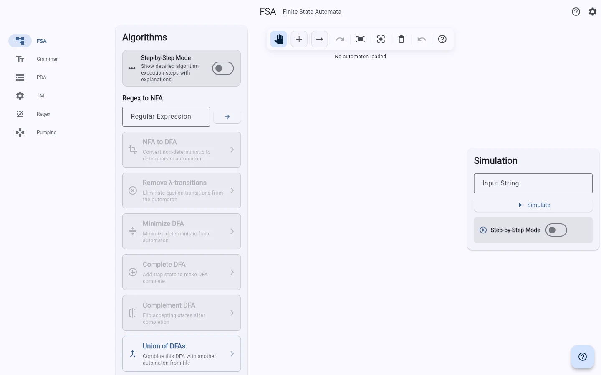
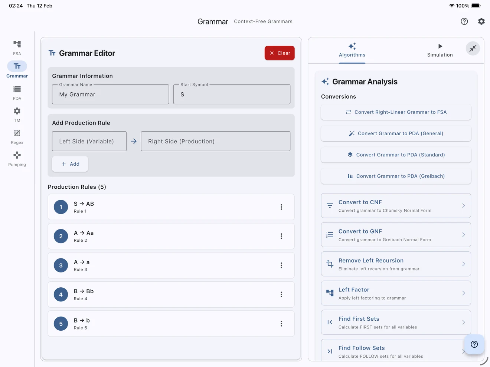
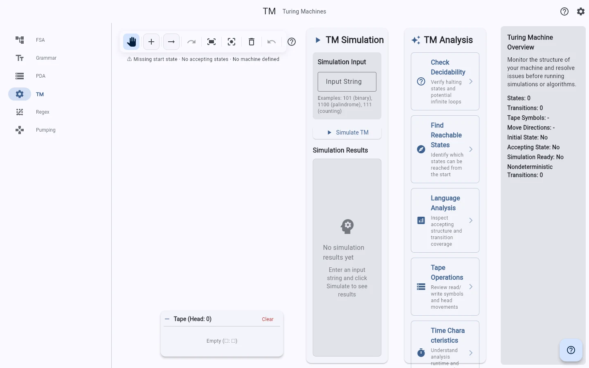
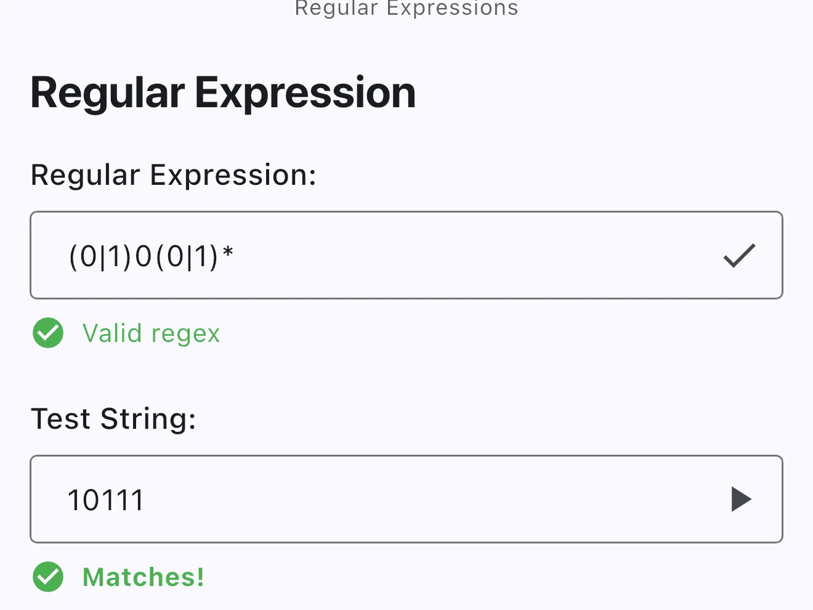

Finite automata
Finite-state workflows include conversion between nondeterministic and deterministic automata, regular-expression conversion, DFA minimisation, and acceptance traces.
Formal languages and automata
A Flutter-based toolkit for constructing, transforming, and simulating formal language models.
It provides dedicated workspaces for automata, context-free and unrestricted grammars, transducers, Turing machines, regular expressions, Pumping Lemma exercises, and L-systems.
Development status: Core workflows are feature-complete. Apple and Android distribution validation remains in progress, and the web app is published here.

01 / Capabilities
The current scope is organized through a typed formal-system registry. File support and transformations remain explicit for each model.
| Workspace | Editing | Simulation | Transformations | Import/export |
|---|---|---|---|---|
| Finite-state automata | State and transition canvas | Step-by-step acceptance traces | NFA/DFA/regex conversion and DFA minimisation | JFLAP XML, JSON, SVG, and native PNG |
| Context-free grammars | Grammar and production editor | Bounded parsing, derivations, and validation | FIRST/FOLLOW, LL/LR diagnostics, normalization, FSA/PDA conversions | JFLAP grammar and SVG |
| Unrestricted grammars | Token-aware production editor | Bounded derivation search | Dependency and derivation analysis | JFLAP XML and versioned JSON |
| Pushdown automata | State and transition canvas | Input and stack traces | PDA-to-grammar and grammar-to-PDA | JFLAP XML, versioned JSON, and SVG |
| Turing machines | Single/multi-tape canvas and reusable building blocks | Tape, transition, and resource traces | Supported TM-to-grammar construction | JFLAP XML, versioned JSON, and SVG |
| Regular expressions | Expression editor | Match testing and comparison | Simplification and automaton conversion | JFLAP XML and versioned JSON |
| Pumping lemma | Guided case workflow | Decomposition validation | Not applicable | JFLAP XML and versioned JSON with loss reporting |
| Mealy and Moore | Typed input/output transducer canvas | Step traces and generated output | Analysis and diagnostics | JFLAP XML, versioned JSON, SVG, and PNG |
| L-systems | Axiom, productions, and turtle settings | Bounded parallel generation | Turtle geometry rendering | JFLAP XML, versioned JSON, SVG, and PNG |
Finite-state workflows include conversion between nondeterministic and deterministic automata, regular-expression conversion, DFA minimisation, and acceptance traces.
Grammar tooling provides parsing diagnostics, FIRST and FOLLOW sets, LL(1) conflict reporting, and a best-effort Chomsky normal form pipeline.
FSA, PDA, and TM simulations expose intermediate configurations through state, transition, stack, or tape traces appropriate to each model.
02 / Data and formats
Turing Lab does not require an account or a developer-operated backend. Editing, simulation, diagnostics, and bundled examples run locally.
Read the privacy policy or inspect the repository's data-flow documentation.
03 / Platforms
Testing builds are undergoing platform validation and release preparation. Experimental targets may have incomplete platform integration and are not part of the current release scope.
| Platform | Status |
|---|---|
| iOS and iPadOS | Testing |
| macOS | Testing |
| Android | Testing |
| Web | Published |
| Windows | Experimental |
| Linux | Experimental |
04 / Interface
Captured from controlled mobile and tablet testing configurations.


